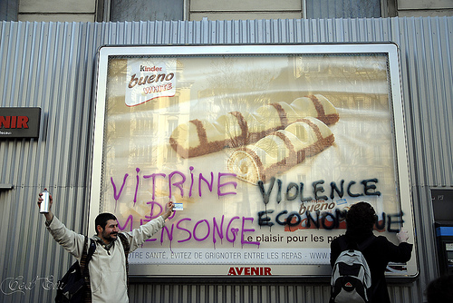

| |
Site dédié à la publication d'informations communiquées par le Collectif des déboulonneurs. En aucun cas ce site n'appelle à des actions illégales. | |
 |
||
|
Accueil du site > Paris > Paris - Compte-rendu de l’action et de la garde à vue du 28 février (...)
Pour sa 34ème action, le collectif parisien avait donné rendez-vous à ses sympathisants au métro Pigalle à 15h. Sous un magnifique soleil la petite troupe se réunit sur le terre-plein central. Les forces de l’ordre sont présentes en nombre, comme à chaque fois (une dizaine de cars), et ont l’air plutôt détentues. Quelques photographes et une caméra de télévision sont présents. Au bout d’une dizaine de minutes, les prises de parole débutent pour expliquer le but de l’action qui va avoir lieu. Les principales revendications sont exposées, on fait un point sur l’avancée des négociations en cours sur la révision de la loi de 1979 au ministère de l’environnement, le texte d’un philosophe sur les rapports entre publicité, tentation et consumérisme est lu, puis les consignes de non-violence sont données pour que l’action se déroule le mieux possible. Nous nous dirigeons alors un peu plus haut sur le boulevard Rochechouart. On a l’occasion de passer devant 4 panneaux 4x3 qui sont fixés sur une façade. Exemples magnifiques de la laideur que nous impose le système publicitaire, et très probablement illégaux car présents sur une façade ayant des fenêtres. Nous les laissons derrière nous, ce sera peut-être pour une prochaine fois. Nous nous arrêtons à hauteur du numéro 53, face à 3 panneaux déroulants. Là encore, ces dispositifs sont assez symboliques des basses-oeuvres des afficheurs. La loi leur permet en effet d’apposer de façon temporaire des panneaux sur les façades en chantier. Le rez-de-chaussée de cet immeuble est parfaitement calfeutré par une palissade en tôle ondulée qui laisse supposer que c’est le cas ici. Cela fait plus d’un an qu’ils sont installés et que les riverains n’ont constaté strictement aucun travaux. De là à penser qu’il est rentable de laisser une fausse palissade de chantier pour louer l’emplacement à des publicitaires, il n’y a qu’un pas que nous ne franchirons pas mais qui devrait quand même soulever quelques questions dans les services municipaux en charge de l’application de la loi. Les six barbouilleurs sortent du rang et s’élancent en direction des panneaux pour y inscrire joyeusement leurs messages. On peut lire "VITRINE DU MENSONGE", "VIOLENCE ECONOMIQUE", "LEGITIME REPONSE", ou encore "50x70". Les policiers arrivent alors pour interpeller les barbouilleurs. Tout se passe dans le calme. Le public applaudi les militants et entame l’hymne du collectif : le barbouilleur. Après une fouille, les six barbouilleurs sont emmenés en fourgon au commissariat du 8ème arrondissement. 
La foule se disperse alors et un petit groupe se dirige vers le jardin de la butte Montmartre pour discuter. Tout le monde pense avoir assisté à une action classique. Mais lorsque vers 20h00 toujours aucune nouvelle ne nous parvient de la part du petit groupe, l’inquiétude commence à poindre. Quelques coups de fil plus tard, la nouvelle est confirmée, ils sont en garde à vue. Tiens donc ! A Paris, c’est la première fois que cela arrive en 34 actions. D’autres collectifs avaient été moins chanceux, par exemple à Amiens où une garde à vue avait été déclenchée pour la première action. Qu’est-ce qui peut bien justifier ce soudain changement d’attitude ? Les suppositions vont bon train et malgré les appels incessants au SARIJ, y compris de notre avocat, il n’y a pas moyen d’obtenir plus d’éléments. Nous apprendrons le fin mot de l’histoire à la sortie des copains, après 21 heures de rétention. Les policiers n’ont semble-t-il pas apprécié les réponses à leurs questions. Ou, plus exactement, ils n’ont pas apprécié que les militants refusent de répondre à certaines d’entres elles. C’est malheureusement un classique, mais à chaque passage au commissariat suite à une action de barbouillage, nous nous voyons demander notre salaire, le nom de notre employeur, notre numéro de sécurité sociale, le nom de notre compagne/compagnon, ... Bref de très nombreux renseignements visant à remplir le fichier STIC mais parfaitement inutiles aux policiers ou au procureur qui doit décider des suites à donner à l’affaire. En effet, les militants engagés dans une action de désobéissance civile assument totalement leurs actes et sont prêts à en répondre au tribunal si nécessaire. Il n’y a donc aucune difficulté pour établir le procès verbal d’interpellation puisque la dégradation légère est reconnue. La possibilité de répondre "Je n’ai rien à déclarer", pourtant inscrit dans le Code Pénal, n’est que très peu acceptée dans les commissariats. Les OPJ y répondent souvent par une menace de garde à vue. En refusant, à titre individuel, de répondre à telle ou telle question sur leur vie privée, les militants ont donc provoqué la colère d’un gradé qui a déclenché la garde à vue. Les conditions matérielles de cette rétention sont affreusement banales, il est difficile de dormir. Peu avant de ressortir le lendemain en début d’après-midi, les militants se voit demander un prélèvement d’ADN. Après le STIC il s’agit d’alimenter le FNAEG. Culot, bluff ? Les militants refusent, pour des raisons qu’il n’est même pas nécessaire de détailler tant elles sont évidentes. Ils se voient menacés d’une seconde garde à vue pour ce nouveau délit. La morale de cette histoire n’est probablement pas à chercher dans un éventuel changement de politique de la préfecture de police envers le collectif des déboulonneurs. En revanche il est assez symptomatique que le simple refus de réponse à une question, qui fait partie des droits les plus élémentaires, puisse, sur les caprices d’un OPJ, déclencher une garde à vue. A la manière d’un enfant gaté à qui on retire son hochet et qui, véxé, se venge en laissant six personnes dormir au poste. La garde à vue est clairement utilisée comme une sanction. La presse a longuement commenté l’an dernier l’explosion du nombre de gardes à vue et le manque de contrôle du parquet sur cet outil judiciaire. Si nous étions cyniques, nous pourrions dire que le collectif des déboulonneurs peut s’enorgueillir de contribuer aux bonnes statistiques du commissariat du 8ème arrondissement. Ce triste épisode pourrait également être rapproché des inquiétudes sur le fichier EDVIGE avec, notament, les très récentes réponses de la ministre de l’intérieur aux parlementaires. En tout état de cause, cela n’entame en rien notre détermination à faire avancer le débat sur l’affichage publicitaire. Tant que ce débat n’aura pas eu lieu au niveau national, sur tous les aspects liés à cette pratique et que l’on n’arrivera pas à une réduction visible et massive de la pollution visuelle, les actions continueront. Nous vous donnons rendez-vous fin mars pour la prochaine action parisienne. MAJ 16 mars : le groupe des Verts a déposé un voeu lors du Conseil de Paris qui s’est déroulé les 9 et 10 mars. Le texte qui a été voté par ce Conseil est très clair. Il se traduite par un voeu de l’exécutif demandant au préfet de police de motiver la garde à vue. MAJ 29 mars : Yvan a rédigé un compte-rendu complet de sa garde à vue La photo illustrant cet article est issue d’un reportage réalisé par Parispassion. D’autres photos sont disponibles ici (remplacer [a]n par @N dans l’URL). Nous rappelons aux journaux qu’ils doivent se mettre en relation avec les photographes avant de publier leurs clichés, généralement les photos ne sont pas libres de droit pour une utilisation commerciale. Compte-rendu synthétique
|
|
Site utilisant SPIP - Hébergement Ouvaton
|